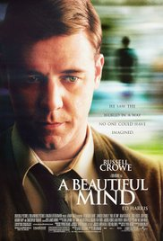

Genres: Drama | Family
Release Date: 12 March 2010 (UK)
Description: In Bedridge, Professor Parker Wilson finds an abandoned dog
at the train station and takes it home with the intention of returning the animal
to its owner. He finds that the dog is an Akita and names it Hachiko. However,
nobody claims the dog so his family decides to keep Hachi.

Genres: Crime | Drama
Release Date: 24 March 1972 (USA
Description: When the aging head of a famous crime family decides to transfer his position to one of his subalterns, a series of unfortunate events start happening to the family, and a war begins between all the well-known families leading to insolence, deportation, murder and revenge, and ends with the favorable successor being finally chosen

Genres: Adventure | Drama | History | Thriller | Western
Release Date: 8 January 2016 (USA)
While exploring g uncharted wilderness in 1823, legendary fronjitiersman Hugh Glass sustains injuries from a brutal bear attack. When his hunting team leaves him for dead, Glass must utilize his survival skills to find a way back home while avoiding natives on their own hunt. Grief-stricken and fueled by vengeance, Glass treks through the wintry terrain to track down John Fitzgerald, the former confidant who betrayed and abandoned him

Genres: Biography | Drama
Release Date: 4 January 2002 (USA)
Description:From the heights of notoriety to the depths of depravity, John Forbes Nash, Jr. experienced it all. A mathematical genius, he made an astonishing discovery early in his career and stood on the brink of international acclaim. But the handsome and arrogant Nash soon found himself on a painful and harrowing journey of self-discovery. After many years of struggle, he eventually triumphed over his tragedy, and finally - late in life - received the Nobel Prize.